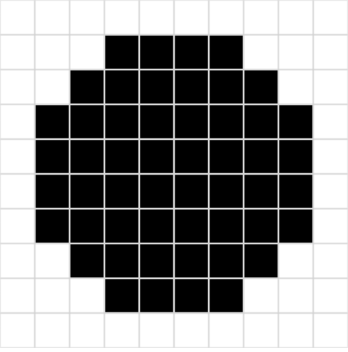

w10 <<
Previous Next >> w12_hw
w11_hw
心得:自從上次的學習，這一次很開心能夠學會製作本週作業，從本質思考，從根本解決問題，很高興能夠成功完成此作業。
以下影片說明如何製作作業:
1. 已知可以用 Python 程式由上往下列印三角形 *, 或由左往右列印三角形 *, 請將此程式延伸到可以在 10x10 的字元區域中, 以 "*" 字元列印出圓型區域. 完成後請將程式碼存入個人 Gist 後, 直接在個人作業網站中的 Brython 頁面中執行. (提示: ?src=gist_script_URL)
def draw_circle(radius):
# 設定區域的大小
size = 10
# 圓心座標 (5, 5) 是在 10x10 的區域的中心
center_x, center_y = 5, 5
# 遍歷整個 10x10 的區域
for y in range(size):
for x in range(size):
# 計算點 (x, y) 是否在圓內部
distance = (x - center_x) ** 2 + (y - center_y) ** 2
# 如果該點在圓內，則顯示 "*"
if distance <= radius ** 2:
print('*', end='')
else:
print(' ', end='')
print() # 換行
# 測試：使用半徑為 4 的圓
draw_circle(4)
第一題解答:以 "*" 字元列印出圓型區域

2. 已知可以在網頁中利用 Brython 繪製方格與塗色, 如下連結, 請設法修改此一程式, 直接將程式存入個人的 Gist, 並利用黑色方塊圍出一個圓形區域.
網頁上的方格與塗色
from browser import html
from browser import document as doc
# 建立畫布
canvas = html.CANVAS(width=400, height=400)
brython_div = doc["brython_div1"]
brython_div <= canvas
# 每格的像素數
gs = 40 # 每格 40px，10x10 網格適合 400x400 畫布
# 畫布的 context
ctx = canvas.getContext("2d")
# 畫矩形的函數
def dRect(lux, luy, w, h, s=1, c='#ff0000'):
ctx.lineWidth = s
ctx.strokeStyle = c
ctx.beginPath()
ctx.rect(lux, luy, w, h)
ctx.stroke()
# 畫網格的函數
def grid(width, height, grid_pix):
# 繪製 10x10 的網格
for i in range(width):
for j in range(height):
dRect(i * grid_pix, j * grid_pix, grid_pix, grid_pix, 1, "lightgrey")
# 填充圓形的函數
def draw_circle(radius):
# 圓心設定在 5, 5（10x10 的中間）
center_x, center_y = 5, 5
# 計算圓形的範圍，網格大小是 gs，所以圓形的半徑要乘以 gs
radius_pixels = radius * gs
# 遍歷 10x10 的格子
for i in range(10):
for j in range(10):
# 計算格子的中心座標
x = i + 0.5
y = j + 0.5
# 計算該點到圓心的距離
distance = (x - center_x) ** 2 + (y - center_y) ** 2
# 如果該點在圓內，填充顏色
if distance <= radius ** 2:
fill(i * gs, j * gs, "black")
# 填充顏色的函數
def fill(x, y, color):
ctx.fillStyle = color
ctx.fillRect(x + 1, y + 1, gs - 2, gs - 2)
# 繪製網格
grid(10, 10, gs)
# 在網格中畫出圓形，假設半徑為 4
draw_circle(4)
第二題解答:利用黑色方塊圍出一個圓形區域

3. 完成上列題目後, 請利用 Youtube 影片簡報個人的解題過程與心得.
w10 <<
Previous Next >> w12_hw